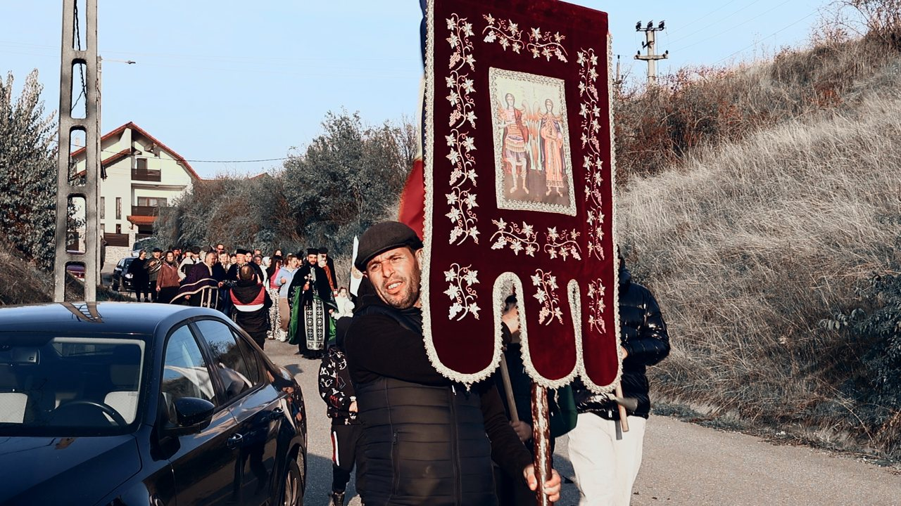
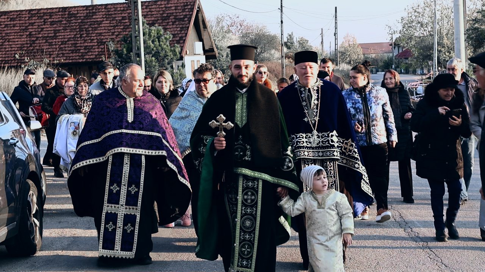
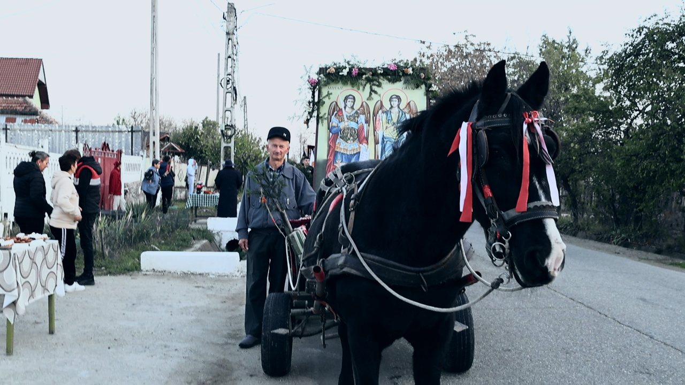
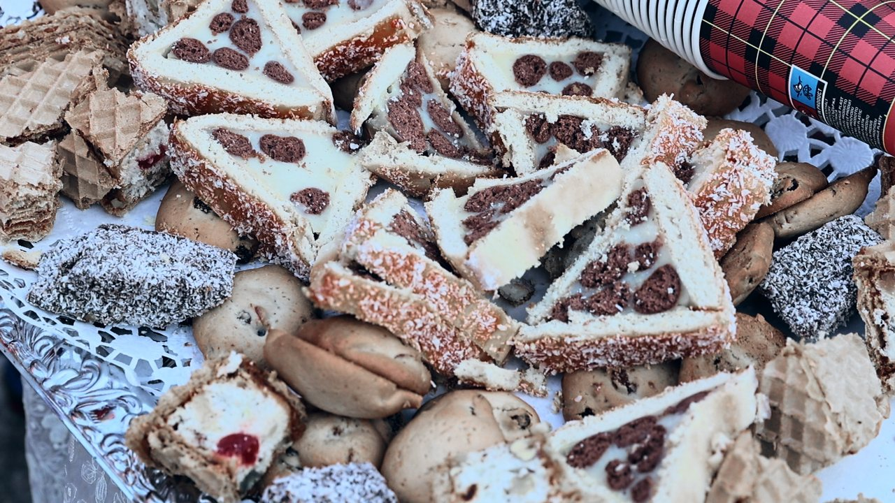
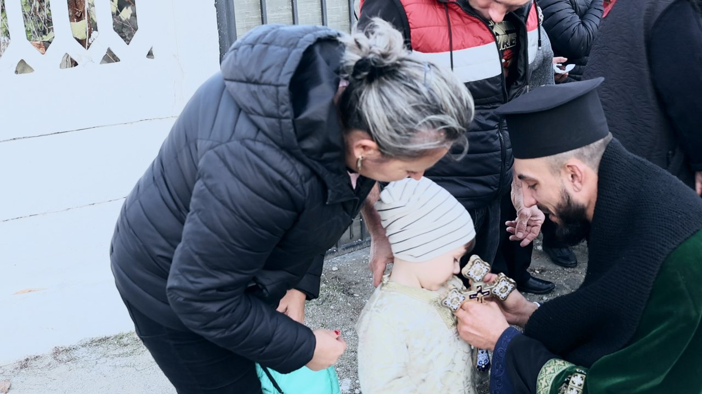
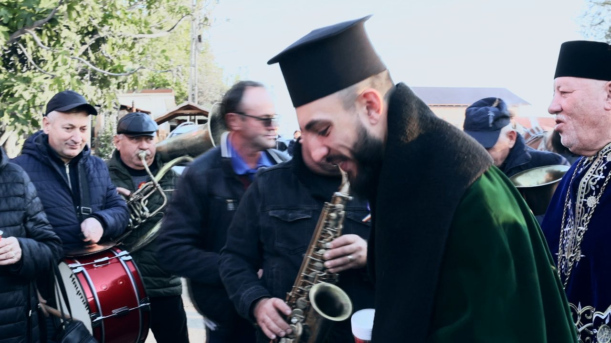
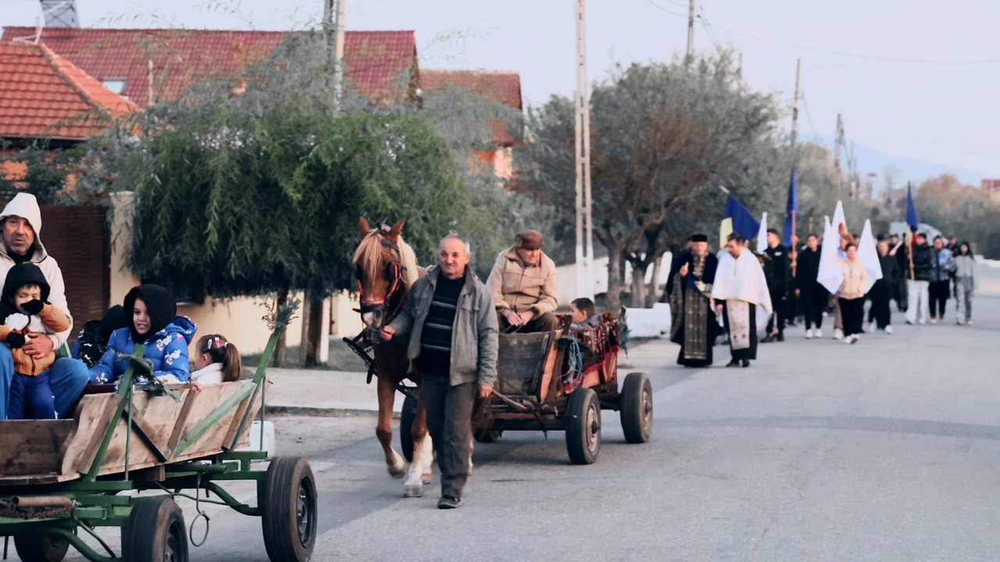
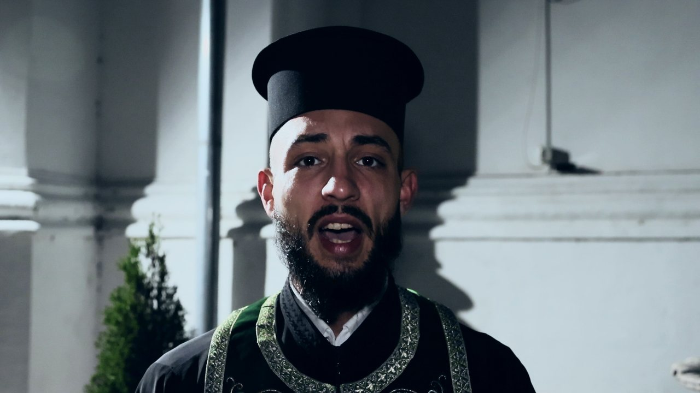
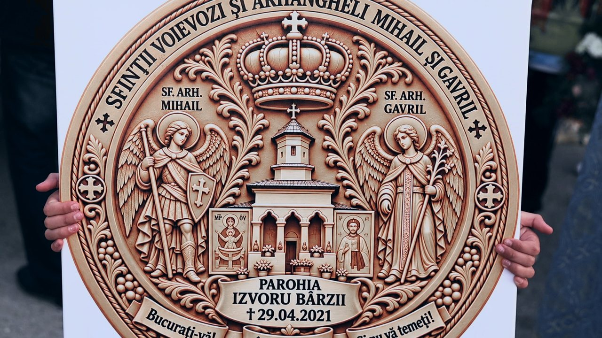
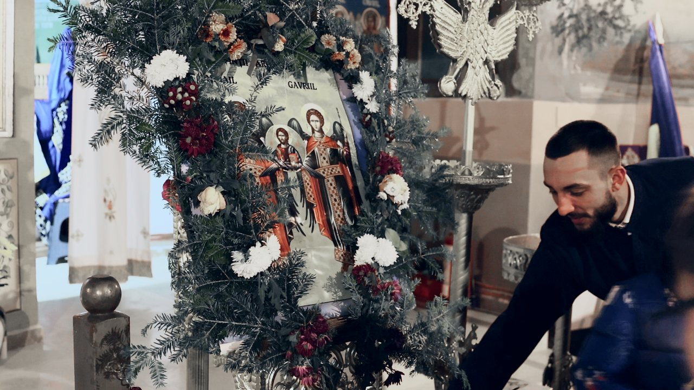

Într-o atmosferă de profundă trăire duhovnicească, credință și bucurie creștină, comunitatea ortodoxă din Parohia Izvoru Bârzii a îmbrăcat haine de sărbătoare, cinstindu-i cu evlavie pe Sfinții Arhangheli Mihail și Gavriil – ocrotitorii cerești ai parohiei, conducătorii cetelor îngerești, slujitori ai voii lui Dumnezeu și vestitori ai mesajului divin.
Cu acest prilej de aleasă însemnătate spirituală, un sobor de preoți a pornit prin sat, într-un frumos pelerinaj al credinței, mergând din poartă în poartă pentru a duce binecuvântarea Bisericii în casele și gospodăriile credincioșilor.
Din poartă în poartă, cu icoana hramului
Alaiul a pornit pe drumul dintre dealuri, în lumina caldă a după-amiezii de toamnă. În frunte au mers praporii și icoana Sfinților Arhangheli, purtată de credincioși, urmați de soborul de preoți, de steaguri și de un șir lung de oameni ai locului. Icoana hramului a fost așezată și într-o căruță împodobită, trasă de cai, care a însoțit procesiunea pe toată durata ei.

În glas de rugăciune și colind, preoții au poposit la fiecare poartă, transformând ulițele satului într-un adevărat drum al comuniunii dintre Biserică și comunitate. Copii, tineri și vârstnici s-au alăturat pe rând alaiului, astfel încât, pe măsură ce înainta prin sat, procesiunea devenea tot mai numeroasă.


Mese întinse și ospitalitate, după tradiția satului
Oamenii locului au întâmpinat alaiul cu bucurie și emoție, pregătindu-se așa cum se cuvine pentru această zi de sărbătoare. Mesele au fost așezate în fața porților cu bucate alese – cozonaci, prăjituri, colaci, ceai și vin fiert –, după tradiția moștenită din generație în generație, iar gazdele au primit cu dragoste soborul de preoți și pe toți cei care îi însoțeau.

Nu a fost doar un gest de ospitalitate, ci o mărturie a credinței vii, a respectului față de Biserică și a păstrării tradițiilor strămoșești.
Rugăciuni pentru cei vii și pomenirea celor adormiți
În fiecare gospodărie s-au înălțat rugăciuni pentru sănătatea celor vii, pentru pacea familiilor, pentru binecuvântarea copiilor și pentru sporul casei. Preoții au cerut numele membrilor familiei și i-au pomenit pe rând, încheind rugăciunea cu „Doamne, miluiește” rostit împreună cu gazdele.

Totodată, au fost pomeniți și cei adormiți întru Domnul – părinții, bunicii și înaintașii satului, cei care au lăsat în urmă nu doar amintiri, ci și temelii de credință, tradiție și dragoste față de Dumnezeu. Această pomenire a dat sărbătorii o dimensiune aparte, reamintind tuturor că, în credința ortodoxă, dragostea nu se sfârșește odată cu trecerea din această viață. Rugăciunea pentru cei adormiți rămâne o expresie a comuniunii sufletești și a nădejdii în Înviere și în viața veșnică.
Fanfara, alături de alai
Pe tot parcursul zilei, fanfara a însoțit procesiunea, iar la mai multe porți muzicanții au cântat pentru gazde, spre bucuria celor prezenți. Între rugăciuni, colinde și cântece, satul a trăit o zi în care credința și voia bună s-au împletit firesc.


Preotul paroh Ștefan Manole: o tradiție pe care o așteptăm de la un an la altul
La finalul procesiunii, preotul paroh Ștefan Manole a explicat semnificația acestui obicei. Părintele a amintit că, în vechime, Biserica scotea sfintele moaște și icoanele în procesiune atunci când comunitățile treceau prin boli și încercări, iar la Izvoru Bârzii credincioșii ies în fiecare an, în ajunul sărbătorii, cu icoana Sfinților Arhangheli și cu sobor de preoți, pentru a-L slăvi pe Dumnezeu și pentru a cere ocrotirea sfinților asupra satului.
„Iată că ieșim și noi cu icoana hramului, pentru a da de veste că este sărbătoare mare la Izvoru Bârzii, și îi rugăm pe Sfinții Arhangheli să ne ajute și în anul care urmează.”

Potrivit părintelui, sărbătoarea a continuat seara, după procesiune, cu slujba privegherii, iar în ziua hramului urma să fie săvârșită Sfânta Liturghie într-un sobor de preoți, în prezența credincioșilor. Preotul paroh a mulțumit tuturor celor care au fost alături de parohie, inclusiv numeroșilor credincioși din Drobeta-Turnu Severin care vin la biserica din Izvoru Bârzii și care au sprijinit lucrările parohiei.

⛪ Pe scurt – procesiunea de la Izvoru Bârzii
Ce: procesiune cu icoana hramului, din poartă în poartă
Unde: Parohia Izvoru Bârzii, județul Mehedinți
Prilej: sărbătoarea Sfinților Arhangheli Mihail și Gavriil (8 noiembrie), ocrotitorii parohiei
Cine a slujit: un sobor de preoți, alături de preotul paroh Ștefan Manole
Ce a cuprins: rugăciuni pentru sănătate, pomenirea celor adormiți, binecuvântarea caselor și a bucatelor, colinde și fanfară
Continuare: slujba privegherii, apoi Sfânta Liturghie de hram
Sfinții Arhangheli Mihail și Gavriil, ocrotitorii parohiei
Sărbătoarea Sfinților Arhangheli Mihail și Gavriil, prăznuită pe 8 noiembrie, este unul dintre cele mai importante momente ale calendarului ortodox. Ea aduce în atenția credincioșilor puterea credinței, ascultarea de Dumnezeu, curajul în fața încercărilor și biruința binelui asupra răului.
Sfântul Arhanghel Mihail este cunoscut drept conducătorul oștilor cerești și apărătorul dreptei credințe, iar Sfântul Arhanghel Gavriil este vestitorul tainelor dumnezeiești, cel care a adus lumii vestea cea bună a Întrupării Mântuitorului Iisus Hristos.

Tradiții care țin comunitatea unită
Prin această frumoasă manifestare religioasă și comunitară, Parohia Izvoru Bârzii demonstrează că tradițiile ortodoxe rămân vii atunci când sunt păstrate cu dragoste și transmise mai departe. Într-o lume în care ritmul vieții cotidiene îndepărtează adesea oamenii unii de alții, asemenea momente readuc în suflete sentimentul apartenenței, al solidarității și al comuniunii creștine.
Colindul, rugăciunea, binecuvântarea preoților și mesele pregătite cu dragoste au transformat această zi într-o adevărată sărbătoare a satului românesc. Dincolo de frumusețea obiceiurilor, mesajul zilei rămâne unul profund: Biserica este aproape de oameni, iar credința nu se trăiește doar între zidurile sfântului lăcaș, ci și în familie, în gospodărie, în comunitate și în grija față de aproapele nostru.
Fie ca Sfinții Arhangheli Mihail și Gavriil să ocrotească Parohia Izvoru Bârzii, preoții slujitori și toate familiile acestei comunități! Să aducă sănătate celor vii, odihnă veșnică celor adormiți, pace în case, înțelegere între oameni și putere de a păstra vie flacăra credinței ortodoxe.
La mulți ani tuturor celor care poartă numele Sfinților Arhangheli Mihail și Gavriil! Pentru alte știri despre comunitățile din județ, urmăriți secțiunea Social de pe MehedintiAzi.ro și pagina de Facebook Mehedinți Azi.
Redactia MehedintiAzi.ro. Foto: cadre din filmarea procesiunii